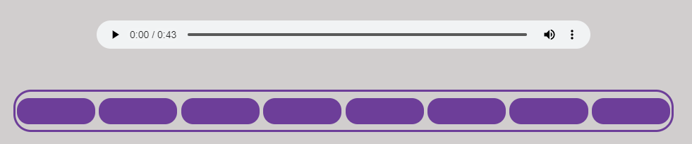
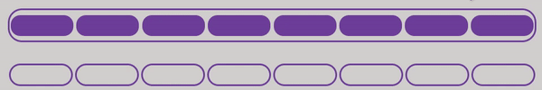
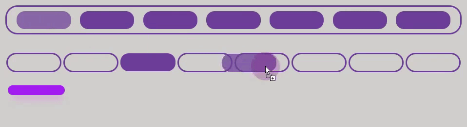

- Данный тест разработан для пользователей, независимо от возраста, желающих проверить свой музыкальный интеллект, наличие музыкального слуха, а также, в случае необходимости - способностей к обучаемости в рамках музыкальных образовательных программ.
- Программой предусмотрено 10 уровней оценки музыкального интеллекта пользователя, его музыкального слуха и способностей к обучению музыке.
-
1 - самый низкий, говорит о том, что Вы "новичок" в музыкальной сфере, и Вам довольно
сложно определять мелодию на слух.
10 уровень характеризует Вас как "гуру" музыки, ведь Вы отлично представляете ход музыки в голове.
Вам будет представлен музыкальный отрывок, а также его части
(фиолетовые кнопки под музыкальным проигрывателем)
(фиолетовые кнопки под музыкальным проигрывателем)

Чтобы прослушать часть мелодии
- необходимо нажать на кнопку (она изменит цвет),
повторное нажатие на кнопку останавливает проигрывание
- необходимо нажать на кнопку (она изменит цвет),
повторное нажатие на кнопку останавливает проигрывание
Под кнопками расположены зоны ответов.
Чтобы установить часть мелодии в зону необходимо зажать кнопку и перетащить в нужную зону
Чтобы установить часть мелодии в зону необходимо зажать кнопку и перетащить в нужную зону

Правила обучения
Если Вы часто ошибались - в следующих попытках будет представлена возможность воспользоваться
подсказкой (посмотреть линию прогресса) А вот использовать ее или нет - решать Вам
Один правильный ответ (фрагмент в правильном месте) = одно деление линии прогресса.
Неправильные действия уменьшают линию прогресса
Вы можете выбрать сложность в разделе Мелодии
